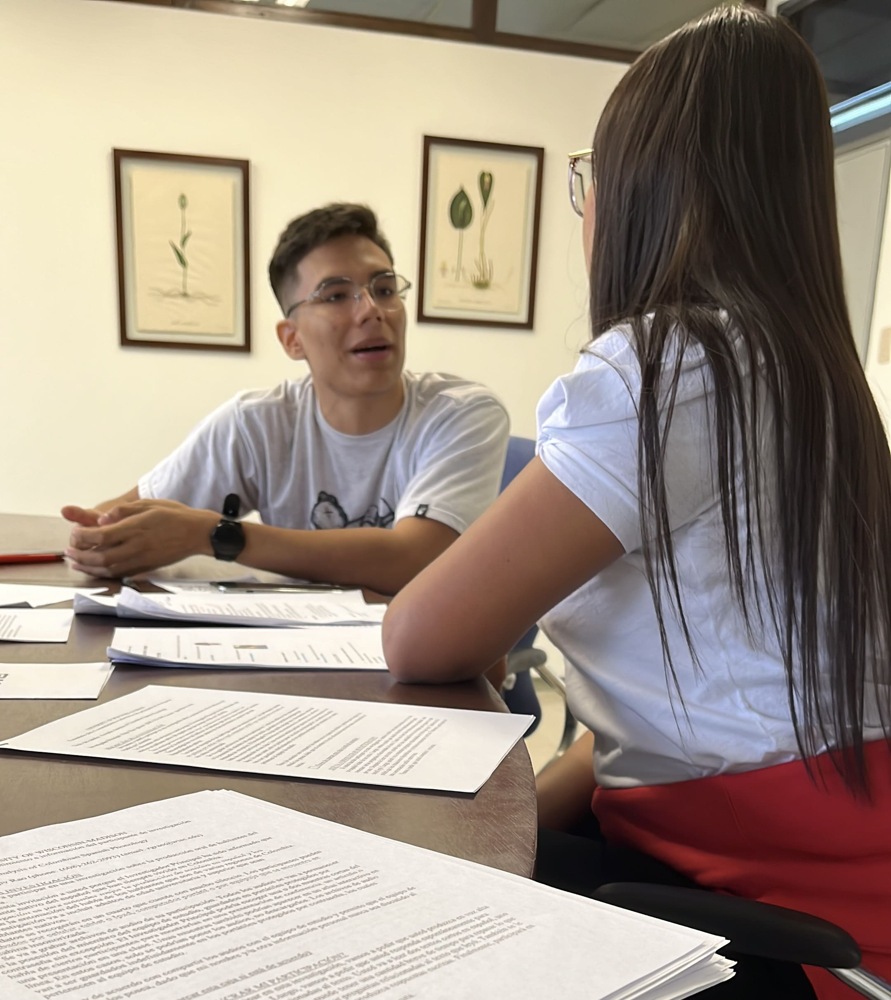

Research
Estefanía Galindo Navarro
I am a linguist, whose interests range from bilingualism, second language acquisition (SLA), language contact, sociophonetics, phonetics and phonology of languages such as English, French, and mainly Spanish. As a Colombian, I have been very fond of studying and shedding light on Colombian Spanish to the world. I am interested in investigating native Colombian Spanish intonational patterns and the sociolinguistics factors involved in its linguistic variation. I have been studying particularly, by utilizing mixed-method approaches, Colombian Spanish intonation in the Caribbean region. My main aim is to expand my knowledge of Colombian Spanish intonation and the social reasons for its patterns by collecting data through different tools such as discourse completion tasks (see Vanrell, Feldhausen & Astruc 2018). Analysis done through two standard frameworks of intonational phonology for Spanish: the Autosegmental Metrical (AM) model and Spanish in the Tones and Breaks Indices (Sp_ToBI) framework along with Praat (Boersma & Weenink 2011) will add to the field of Spanish language, intonational theory, sociolinguistics, and variation/change. Furthermore, I would love to open a space where Colombians can learn some unique aspects of their speech patterns and offer them some social reasons for their variation, which would be very significant in order to love and understand our linguistic diversity in our country.

Doing fieldwork in Cali, Colombia